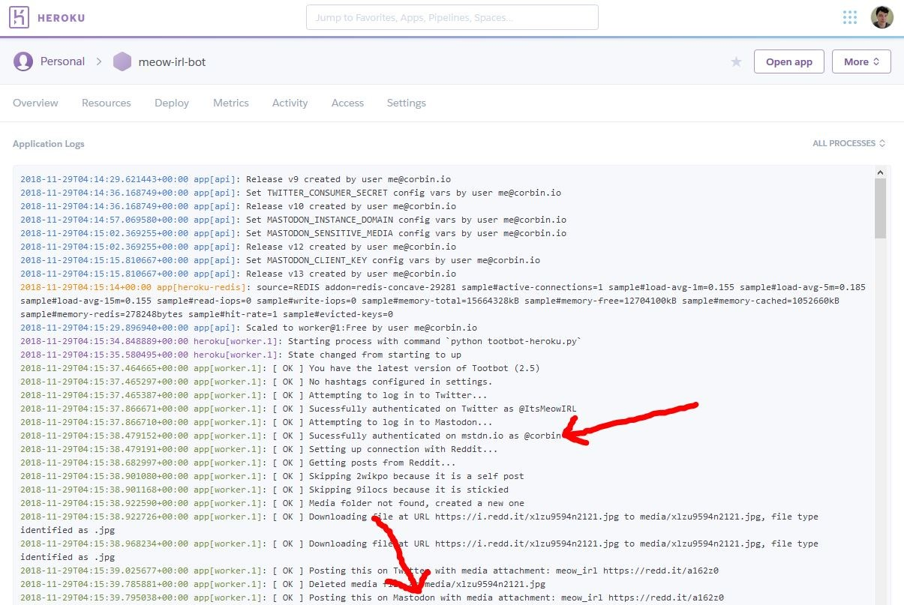
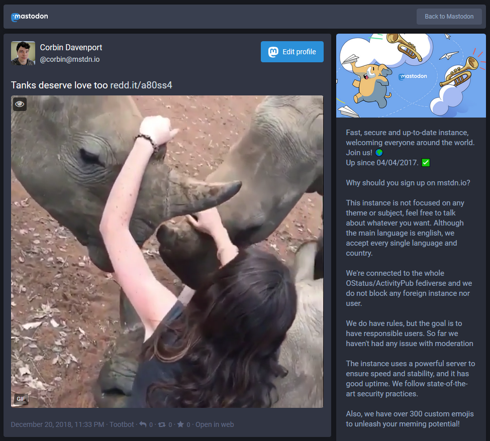

If you haven’t heard of it before, Tootbot is a tool I developed that can automatically post content from Reddit to Twitter and Mastodon. It supports media attachments, it can monitor multiple subreddits at once, and it has tons of options.
Tootbot 2.5 is now available, and the main addition is Mastodon support for the Heroku version. If you have no idea what that means, let me explain.
Tootbot is available in two versions — a Python script that runs locally on your computer, and a Heroku app that runs in the cloud for free. Until now, the Heroku version didn’t support posting to Mastodon, due to some issues storing login tokens. This has now been fixed, so anyone can make a Twitter and/or Mastodon bot that runs in the cloud!

Tootbot on Heroku posting to Mastodon
If you want to set up your very own bot, the easiest way is to set it up in the cloud with Heroku. Full instructions are available here, and the whole process should take less than 30 minutes. If you have a home server or other computer you don’t mind leaving on all the time, you can still run Tootbot locally.

Media post on Mastodon
This release also has a few other minor improvements and bug fixes. You can read the full changelog and upgrade instructions on GitHub here.